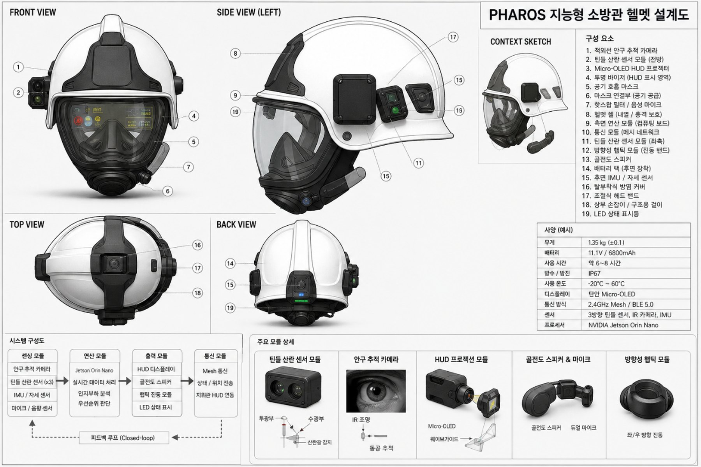

42.6%
농연으로 인한 방향 상실
소방대원 순직·공상 사고 중 농연에 의한 방향 상실과 붕괴·플래시오버 등 돌발 위험 미인지에서 기인한 비율.
소방청 사고 통계 분석TEAM ARK · 제8회 한국코드페어 SW공모전 · 대전대신고등학교
Priority · Hazard · Attention · Reorganizing · Overload · Suppression
화재 현장의 문제는 정보가 부족한 것이 아니라 너무 많다는 것입니다. PHAROS는 대원의 시선·동공과 방향별 연기 농도를 실시간으로 읽어, 지금 이 대원이 처리할 수 있는 만큼만 남기고 나머지는 소리와 진동으로 옮깁니다.
01 / 문제 정의
화재 현장에 진입한 대원은 연기·화염·장애물·요구조자·붕괴 위험·탈출 경로·동료 위치를 동시에 처리해야 합니다. 그런데 그 순간 대원의 인지 자원은 평소보다 더 적습니다.
소방대원 순직·공상 사고 중 농연에 의한 방향 상실과 붕괴·플래시오버 등 돌발 위험 미인지에서 기인한 비율.
소방청 사고 통계 분석화면에 동시에 표시되는 시각 정보가 3개에서 5개로 늘어날 때 판단 지연 시간이 약 1.8배 증가.
Hick–Hyman Law심박수 150 BPM 이상의 극한 스트레스 상황에서 정보 인지 오류율이 최대 240%까지 급증.
인간공학 스트레스 연구모의 화재진압 실험에서 참가자의 최대 심박수는 연령예측 최대심박 대비 평균 85~102%에 도달.
소방관 대상 모의 진압 실험요구조자, 화점, 대피로, 붕괴 위험 등 다수의 정보를 동시에 처리해야 하며, HUD에 정보가 과도하게 표시되면 정작 즉각 대응해야 할 핵심 경고의 탐지가 지연됩니다.
기존 HUD는 대원의 인지 상태와 현장 가시성 변화에 관계없이 정보량과 표시 방식이 고정되어 있어, 상황에 따른 대응이 어렵습니다.
농연과 보호구 착용으로 시야가 제한된 상황에서도 기존 장비는 시각 중심으로 정보를 전달해, 필요한 정보가 보이지 않거나 누락될 가능성이 있습니다.
질문은
“무엇을 더 보여줄 것인가”가 아니라
“지금 이 대원이 처리할 수 있는 정보량은 얼마인가”입니다.
02 / 해법
PHAROS는 센서값을 그대로 시각화하지 않습니다. 대원의 인지 상태(얼마나 여유가 있는가)와 방향별 가시성(지금 그쪽이 보이는가)을 먼저 판단한 뒤, 정보의 순서 · 개수 · 출력 채널을 바꿉니다. 그리고 출력 이후 달라진 시선과 동공을 다시 측정해 다음 출력에 반영합니다.
IR 안구 카메라로 시선 좌표 · 동공 직경 · 눈 깜빡임을 수집
Gaze · Pupil · Blink
3방향 틴들 산란 챔버가 방향별 연기 농도를 동기 검파로 측정
Tyndall ×3 · IMU
시선 엔트로피 Hs/Ht, 인지부하 CLI, 가시거리 V 산출
H · CLI · V
STOM/SEEV 모델로 위협 대상의 전술 가치를 실시간 재정렬
STOM / SEEV
Dynamic Top-K로 표시 개수를 줄이고, 막힌 정보는 골전도·햅틱으로 이관
Top-K · Cross-modal
대원별 CLI·위치·가시성을 메시망으로 지휘 HUD에 동기화
Mesh · Telemetry
출력 이후 변화한 시선·동공을 재측정 → Closed-loop 피드백
시선의 분산도(정적 엔트로피)와 이동의 무질서도(전이 엔트로피), 동공 반응 기반 CLI로 주의 불안정과 터널 비전을 구분해 판정합니다.
연기를 하나의 전역 값으로 다루지 않습니다. 전방·좌·우 각각의 가시거리를 역산해 막힌 방향의 정보만 선택적으로 강등합니다.
시야가 무너져도 위협·요구조자 표식은 삭제되지 않습니다. 골전도 입체 음향과 방향성 진동으로 무손실 이관됩니다.
AI는 행동을 강제하지 않는 비개입형 보조입니다. 측면 비상 스위치로 MAYDAY 수동 발신, 고정 모드 전환 등 제어권은 항상 대원에게 있습니다.
03 / 인터랙티브
아래 시뮬레이터는 PHAROS 코어의 실제 수식(V = Vmax·e−kρ,
Vi = Bi(1−λρi))을 그대로 사용합니다.
슬라이더를 움직이면 표시 개수 · 순위 · 출력 채널이 함께 바뀝니다.
동공 변화율·팽창 진폭·도달 지연·깜빡임 결손의 가중 결합값. 0.45 초과 시 표시 항목 K가 2 → 1로 압축됩니다.
대원 시야 하방 15° 단안 Micro-OLED에 투사되는 화면의 모식도
04 / 핵심 알고리즘
Hs = −∑i=1M pi log2 pi
관측 윈도우 동안 시선이 각 관심영역(AOI)에 머문 시간 비율 pi의 분산도. 한 곳에 고착되면 0, 균등하게 흩어지면 정규화값이 1에 수렴합니다.
정규화 Hsnorm = Hs / log2M
Ht = −∑i πi ∑j≠i Pij log2 Pij
영역 간 이동 확률 행렬 Pij의 불확실성. 규칙적인 왕복 탐색은 0, 무작위 탐색은 높은 값을 내어 방향 감각 상실을 판정합니다.
CLI = w1NΔp + w2Npeak + w3Nlat + w4Nblink
기준 동공 직경비 변화량, 최대 팽창 진폭, 팽창 도달 지연, 깜빡임 결손도를 가중 결합. 가중치는 w = (0.45, 0.25, 0.20, 0.10).
Is = Ion − Ioff · St = γIs,t + (1−γ)St−1
V = Vmax · e−kρ
1 kHz 변조 동기 검파로 외광·화염 플리커를 물리적으로 제거하고, EMA 평활 후 Koschmieder 감쇄식으로 가시거리를 역산합니다.
Bi = wpPi + wsSi + weEi + wcCi − wdDi
Vi = max(0, Bi·(1 − λρi)) Ai = Bi·λρi + μ·CLI + ν·Ri
인명 구조 가치 · 현저성 · 공간 기대도 · 조치 난이도 · 신뢰도를 융합한 기본 점수 Bi에서, 해당 방향의 연기 농도만큼 시각 전달 가치 Vi를 깎고 그만큼 대체 채널 가중치 Ai로 옮깁니다. 표시 개수 K는 CLI에 따라 2 → 1로 압축되며, 경계에서의 화면 명멸을 막기 위해 복귀 임계 0.38 · 유지 타이머 2초의 히스테리시스를 커널 단에 구현했습니다.
05 / 기술 아키텍처
임베디드 타깃에서의 연산 효율과 웹 기반 GUI의 이식성을 함께 얻기 위해 실시간 분석 백엔드와 시각화 프론트엔드를 완전히 분리하고, WebSocket 한 줄로 이었습니다.
Replay · Serial/UART · CSV/JSON
Python 3.11 · NumPy · SciPy · OpenCV
FastAPI · WebSocket · JSON
React · TypeScript · SVG · Canvas
Pytest · Mypy · Ruff · Vite
입력 · 분석 · 통신 · HUD 모듈을 서로 독립적으로 수정
같은 Replay 데이터를 반복 재생해 알고리즘 수정 전후를 비교
실제 센서 · 지휘관 관제 · 다중 대원 통신으로 확장
06 / 하드웨어

안면 마스크 내부 850 nm IR LED 어레이와 오프액시스 고속 IR 센서(하단 30°·측면 15°)로 각막 반사점–동공 중심 상대 변위(PCCR)를 연산해 2D 시선 좌표와 동공 직경을 병렬 출력.
650 nm 레이저 다이오드와 90° 직교 배치 실리콘 포토다이오드를 밀폐 챔버에 탑재. 광원을 1 kHz로 점멸해 점등/소등 전압 차분으로 외광과 화염 플리커를 물리적으로 소거.
중심 시계 하방 15° 지점에 100–3,000 nits 자동 가변 밝기로 투사. 전방 가시거리 급감 시 휘도를 최소화하고 골전도 유도음으로 전환.
턱뼈 접촉면 진동자로 청각 사각지대를 방어하고, 어깨·헬멧 측면의 좌우 격리 LRA 코인 모터로 방향을 지시. 모터 구동단은 광커플러로 물리 절연.
지휘 서버 링크 소실 시 인접 대원 단말을 라우팅 노드로 전환해 다단 홉핑. 배터리 SOC 15% 이하에서 로드 셰딩으로 대피 가이드와 MAYDAY 전력을 보전.
[대원 ID 1B] [위치 6B] [CLI 1B] [연기농도 3B] [전술이벤트 1B] [CRC 2B]
내열 280 ℃ 이상 UL94-V0 등급 PC-PBT 합성수지 외함, 조립 이음선과 케이블 접촉단 전 부위 이중 O-ring으로 IP67 밀폐.
안구 카메라 파울링, 챔버 광학 오염 감지 시 정상 시계를 가정하지 않고 안전 가시도 최소 상태를 선언합니다.
지휘망 접속이 끊겨도 실내 회귀 방위 안내와 CLI 분석 파이프라인은 예비 전원으로 무중단 가동합니다.
HUD · 오디오 · 햅틱 중 하나가 파손되어도 잔존 모달리티 출력이 자동 증폭 보완됩니다.
장갑을 낀 채 조작하는 측면 비상 스위치로 MAYDAY 수동 발신, AI 우회, 고정 모드 전환이 가능합니다.
07 / 검증
합성 입력을 이론값과 대조하는 방식으로 각 모듈을 단계별 검증했습니다. Ruff 코드 검사, Mypy 타입 일관성 검사, Pytest 기능 테스트를 모두 통과했습니다.
| 입력 조건 | 실측치 | 제어 매핑 |
|---|---|---|
| 단일 AOI 고착 | Hs = 0.0000 | 시선 고착 감지 |
| 12개 AOI 균등 분산 | Hsnorm = 1.0000 | 주의 불안정 판정 |
| 무작위 300점 | 0.9946 | 공간 분산 탐색 |
| A→B→A→B 왕복 | Ht = 0.0000 | 결정론적 이동 |
| 4 AOI 무작위 전이 | Ht = 1.5264 bits | 주의 분배 오류 경고 |
| 무작위 전이 300점 | Htnorm = 0.9110 | 터널 비전 필터 스캔 |
고착과 균등 상태가 이론 경계값 0과 1에 정확히 매핑되었습니다.
동공 팽창량 증가에 CLI가 단조 증가했고, 결측 3프레임을 삽입한 데이터도 전처리 보간 후 원본과 소수점 4자리까지 동일한 값을 냈습니다.
| 검계 전압 | 상대 농도 ρ | 역산 가시거리 V | 시스템 모드 |
|---|---|---|---|
| 0.00 | 0.000 | 30.00 m | NORMAL 최상위 위협 시야 확보 |
| 0.11 | 0.111 | 21.50 m | NORMAL 부분 농연 보정 |
| 0.33 | 0.333 | 11.04 m | NORMAL 원거리 시각 점수 보정 |
| 0.56 | 0.556 | 5.67 m | FOCUSED 화면 간소화 |
| 0.78 | 0.778 | 2.91 m | EMERGENCY 가시 한계 침하 |
| 1.00 | 1.000 | 1.49 m | EMERGENCY 시계 제로 선언 |
우측 템플 센서에만 연기 농도 0.99를 인가했을 때, 그 방향의 항목만 강등되고 나머지 방향의 점수는 소수점까지 그대로 보존되는지 확인했습니다.
전역 연기 값 하나로 화면 전체를 죽이는 방식이 아니라, 국소 틴들 수광 정보가 해당 지향 위험에만 개입하는 독립 감각 이관 로직이 정상 동작함을 보여줍니다.
한계 고지. 본 결과는 소프트웨어 알고리즘과 합성 입력을 대조 검증한 것입니다. 실제 화재 현장에서의 센서 정확도, 착용 편의성, 내열성, 통신 안정성, 실제 인지부하 저감 효과는 하드웨어 프로토타입과 사용자 실험을 통해 별도로 검증해야 합니다.
08 / 비교
| 비교 항목 | 3M Scott Sight | Qwake C-THRU | MSA G1 | PHAROS |
|---|---|---|---|---|
| 정보 표시 방식 | 미가공 열화상 화면 상시 노출 | AI 실시간 테두리 가이드라인 | 공기 잔량·장비 상태 LED | 위험도 가중치 기반 실시간 Top-1/2 가변 표출 |
| 사용자 인지 상태 분석 | 부재 (고정 렌더링) | 부재 (고정 렌더링) | 부재 | 시선 엔트로피 Ht · 동공 반응 CLI 융합 분석 |
| 연기 가시성 적응 | 열 탐지 가능하나 시야 방해에 무감 | 구조물 강조 중심, 농도 감지 한계 | 없음 | 틴들 산란 기반 실시간 가시거리 산출·매칭 |
| 우선순위 엔진 | 고정형 | 규칙 기반 고정 | 해당 없음 | STOM/SEEV 기반 인지 가치 평가 및 재배치 |
| 대체 출력 채널 | 시각 집중형 | 시각 집중형 | 단순 비프 경고음 | 시각 · 골전도 · 방향성 햅틱 자동 크로스모달 |
| 팀 단위 상황 공유 | 무선 영상 송신 한정 | 자체 클라우드 전송 위주 | 단순 경보 공유 | 대원별 CLI · 위치 · 통신 상태 상호 동기화 |
| 제어 루프 구조 | Open-loop | Open-loop | Open-loop | 센싱–판단–표출–재센싱 Closed-loop |
← 좌우로 스크롤하여 전체 항목을 확인하세요
09 / 다음 단계
실제 연기 환경에서 틴들 센서값과 가시거리의 관계를 측정하고, 목재·플라스틱·섬유 등 연소 물질과 수증기·오염에 따른 오차를 보정합니다.
소방관 또는 훈련 참가자를 대상으로 고정형 HUD와 적응형 HUD의 요구조자 탐지시간, 정보 누락률, 반응시간, NASA-TLX 주관 작업부하를 비교합니다.
안구 카메라, HUD, 골전도 장치, 햅틱 모터, 통신 모듈을 헬멧 시제품에 결합하고 고온·충격·방수 내구성과 장시간 착용 피로도를 확인합니다.
센서 오류, 통신 두절, 배터리 부족 상황에서도 대피 안내와 MAYDAY가 유지되는지 확인하고, 장시간 연속 실행·데이터 폭주·다수 대원 동시 접속 시나리오까지 시험 범위를 넓힙니다.
동공 크기와 시선 패턴의 개인차를 반영한 사용자별 CLI 임계값 자동 조정, 그리고 열화상·깊이 센서·UWB 위치 추적을 통합한 3차원 대피 경로 안내로 확장합니다.
확인해야 할 정보 수를 제한해 시각 정보 과부하를 줄입니다.
시선·동공 데이터로 인지 상태에 따라 HUD를 실시간 단순화합니다.
방향별 가시성을 반영해 볼 수 있는 정보와 옮겨야 할 정보를 구분합니다.
시각 전달이 어려울 때 골전도·햅틱으로 채널을 전환합니다.
개인 장비를 팀 단위 안전관리 시스템으로 확장합니다.
10 / 팀
대전대신고등학교 · 제8회 한국코드페어 소프트웨어 공모전 출품작
인공지능 사용 고지. 작성 과정에서 인공지능은 자료 조사, 작성 보조, 일부 수치 및 시각화 과정에서만 사용되었으며, 아이디어와 핵심 구성의 구조화는 모두 TEAM ARK 팀원들이 수행했습니다. 모든 인공지능 초안은 사람이 검토하고 재구성했습니다.